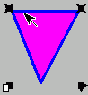
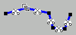

Visual Perl/Tk editor (canvas edition)
(by Felix Liberman - FelixL@Rambler.ru)
This editor can help any unexperienced in programming user to create canvas-based Perl/Tk graphics and embed it to Perl/Tk application.
0. Disclaimer
This software distributed FREE under GNU Public License.
You can visit http://www.gnu.org in order to see details.
See also Chapter 7 of this document.
1. Main menu
All editing functions can be called from main menu:
2. Toolbar
Some commonly used actions associated with toolbar buttons.
3. Keyboard shortcuts
There are also keyboard shortcuts for main commands:
Ctrl/Z - Undo
Ctrl/O - File Open
Ctrl/S - File Save
D - Duplicate
DEL - Delete
4. Mouse
Mouse functions:
Left button - select object under cursor
Left button drag - drag/resize object(s) (if any selected)
Rignt button drag - select/unselect group of objects
5. Selection
There are 3 modes of selection:
1. Simple single-object selection - select by clicking.
In this mode user can drag, erase or edit object properties by clicking on respective icon:

2. Multiple objects selection - stretch area with right button.
In this mode user can drag all selected objects by mouse or erase/duplicate using menu/toolbar/keyboard
3. Object points editing - click on selected or on icon
In this mode user can drag any object point (or resizing bar) or cut segments by clicking on 'scissors' icon

6. Status bar
In the bottom of editor window located status bar, displaying ID of currently selected object and modification flag
NOTE:
When going back with 'undo' to state before 1st modification
the flag remain 'dirty' :-(
7. Some more words from author
My program developed for "fair use" suggesting that user would not try intentionally damage any data. From my side done all the best in order to supply powerful 'undo' mechanisms for such cases elimination. All bug reports are welcomed and will be served ASAP.
You can contact me, download updated versions of this program and other software from my site http://felixl.coolpage.biz/download.html